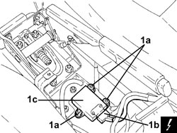

3350E30 LATERAL ACCELERATION AND SLEWING SENSOR - R.R
- Path
- Procedures > 33 BRAKES > 3350 TRACTION CONTROL > 3350E VEHICLE DIRECTION CONTROL SYSTEM VDC/ESP > 3350E30 LATERAL ACCELERATION AND SLEWING SENSOR - R.R
- Kind
- repair procedure (removal / refitting; the operation number is the code)
- Applies to
- all engines; all production periods
- Interactive page
- https://sloeber94.github.io/elrnDB-fCrm/en/#/194000514
Applies to: all engines; all production periods
 Removing
Removing
 Refitting
RefittingOp. 7040A65 CONSOLE SIDE CLOSING (ONE) - R.R.
(Both).
Op. 5010C32 AIR VENT ON TUNNEL COVER FOR REAR SEATS - R.R.
Op. 7040L28 TUNNEL SWITCH PANEL - R R
Op. 5520A10 IGNITION SWITCH ASSEMBLY - R+R
Op. 7040L20 TUNNEL COVER - R.R
1. Undo the nuts (1a), disconnect the electrical connection (1b) and remove the lateral acceleration and slewing sensor (1c).
Description | Connector | |
|---|---|---|
1b | Slewing control unit |

Applies to: all engines; all production periods
Refitting
Removing- Connect the electrical connection to the lateral acceleration and slewing sensor, then place it back in its housing and secure it using the nuts.
Op. 7040L20 TUNNEL COVER - R.R
Op. 5520A10 IGNITION SWITCH ASSEMBLY - R+R
Op. 7040L28 TUNNEL SWITCH PANEL - R R
Op. 5010C32 AIR VENT ON TUNNEL COVER FOR REAR SEATS - R.R.
Op. 7040A65 CONSOLE SIDE CLOSING (ONE) - R.R.
(Both).